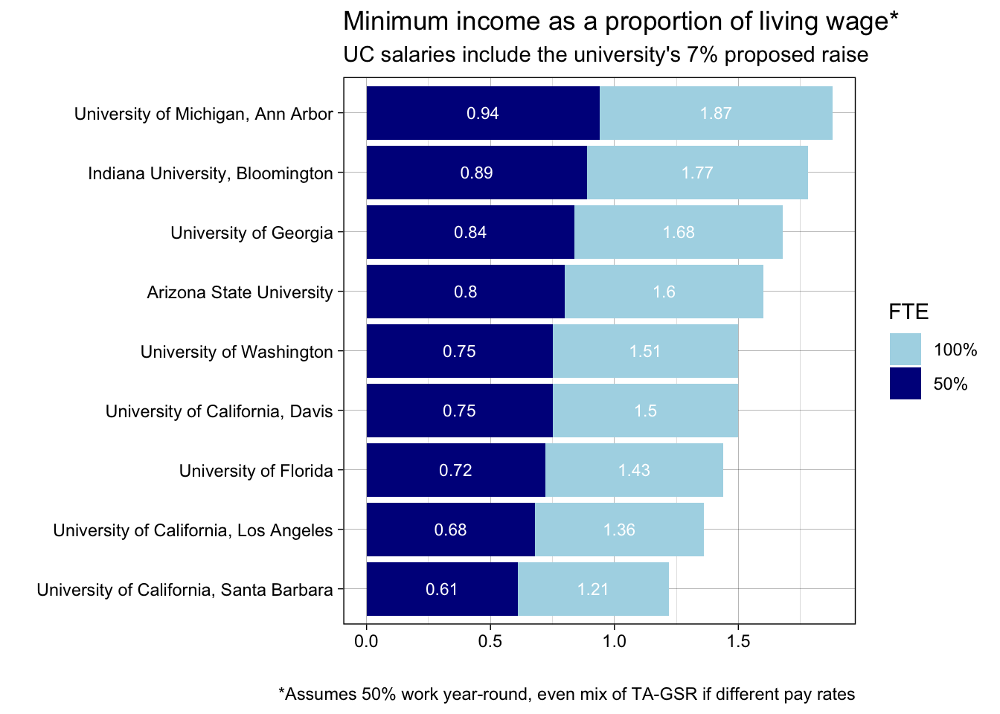
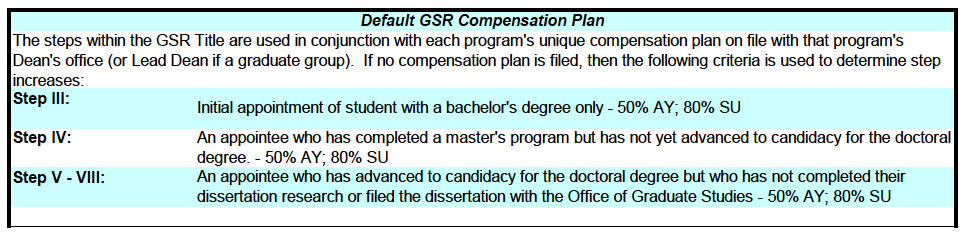

In response to Provost Brown
A data-driven approach to understand UC’s bargaining claims
On November 15, Provost and Executive Vice President for Academic Affairs, Dr. Michael Brown, sent a letter to UC administration and faculty to provide an update on their offers re: UC UAW strike (see the letter here). It is frustrating to see summaries like this that omit nuance and supporting data (note, I have similar gripes about UAW’s communication), so I’d like to comment on a couple of unsubstantiated and misleading claims made by the University of California.
Claim 1: Competitive compensation
Provost Brown’s letter states: “Under our current proposals, our academic student employees would be among the highest compensated among public universities in the Association of American Universities (AAU), with compensation similar to what top private institutions offer.”
There was a similar quote in an article in the SF Chronicle: “In its statement, the university defended its offers to the union, saying that if accepted, the wages would be among the best paid in public universities and ‘more comparable to private universities such as Harvard, MIT, and USC.’”.
These comparisons claiming competitive compensation are unsubstantiated. In a comparison to other public universities around the country, University of California lags behind, and the proposed increases of 7-10% would still leave us at the tail end. I’ve already explored UC pay relative to other schools in another post, but here is a quick visualization of where UC would fall, relative to cost of living, compared to other public universities under the UC’s proposal. A 7% raise brings grad students on UC campuses up from the current 57-70% of their area’s living wage to 61-75% of living wage. This pales in comparison to its public university peers, who pay an average of 82% living wage.
Similarly, claiming that this puts UC on par with ‘top private institutions’ has no basis. A UC graduate student employed at 50% at a Step III appointment (which is considered the default minimum hiring rate, according to UCD salary scales, see the next point for further discussion), is $2,191. A 10% increase (again, being generous, see the next section) would be $2,410.
In contrast, Harvard’s compensation plan, which is the base rate for all students regardless of employment is $3,549 per month. Stanford’s compensation plan for 50% FTE is a minimum of $3,816 per month. The UC’s proposal positions its graduates students to making less than 70% of the top private institutions the administration claims to match.
Claim 2: 9-10% increase for GSRs
Provost Brown’s letter states: “Most GSRs will see 9-10 percent increases in year one of the contract, with a 3 percent increase in each subsequent year. GSRs who are on the lowest two salary points will see a 17-26 percent increase in the first year. For example, a GSR who is currently on Step 2 with a 50% appointment will see their monthly salary increase by 17.5 percent in the first year of the contract.”
This claim is misleading for those unfamiliar with how hiring across steps works in practice. The focus of this claim is put on the 17-26% raise for Step I and II GSRs, but there’s an issue here. At least according to the UC Davis’s account of the Graduate Student Salary Scale, the default compensation plan is such that Step III is the “initial appointment of student with a bachelor’s degree only.”

According to this default plan then, Step I and Step II shouldn’t be used. I cannot speak to how many students are actually hired at these steps, but personally and among my peers, the initial hiring is Step III. Step III is also what I have considered the ‘minimum’ in my analyses so far. What this means is that the UC’s most impressive-looking talking point is moot. They’re proposing wage increases for steps on a salary scale that, by the own proposed default, shouldn’t be used.
As a result, it calls into question the more general claim of a 9-10% increase for GSRs. If the increases are 17% and 26% for Steps I and II, these values could be over inflating the increase gained by other steps. UC is not explicit about this. On their webpage they state that: Current rates are $22,005 — $43,119 and proposed rates are $28,275 — $47,679. SO we can then assume that highest step, Step X, increases by 11%. But again, the UC default scale suggests that student post-QE should be hired at Steps VI-VII, meaning that Steps IX and X are very atypical. From my personal experience, as a fifth year student with well-developed data analysis skills, I have negotiated for only one Step IX appointment under the employment of a very supportive faculty member. So if 17%, 26% and 11% are the increases for steps that are generally not relevant to graduate students, the remaining increases in Steps III-IX must be lower to generate a 9-10% average increase. Most likely then, the raises for the most relevant steps are only about 5%. I would appreciate seeing a step by step breakdown of the raise increases to better understand what’s being offered to the most relevant salary steps.
Claim 3: Framing tuition as part of salary rather than as a benefit
Next week I’ll update with a much-needed conversation about tuition remission.